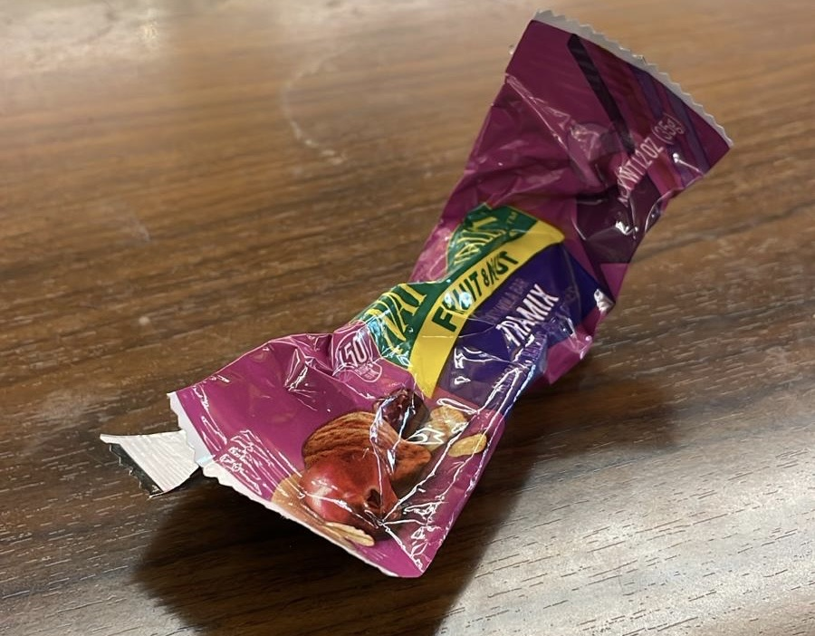
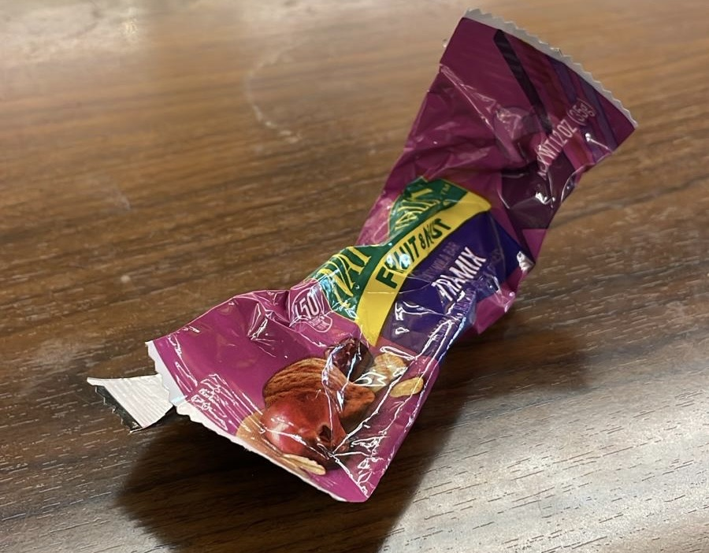
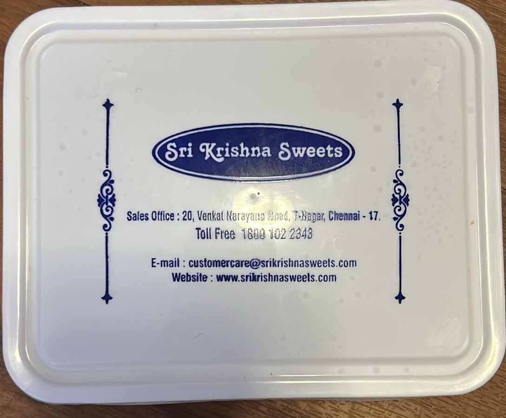
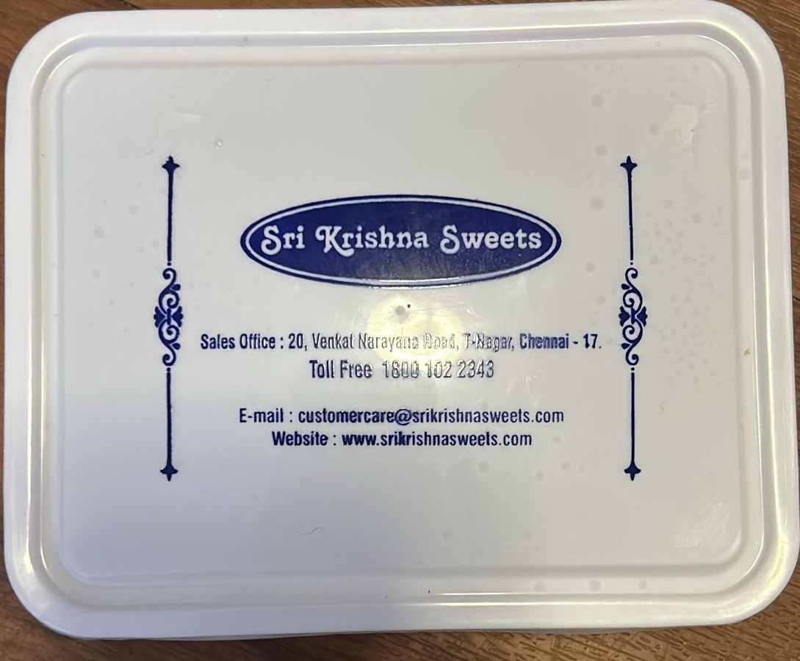

Looking at this week’s trash, I noticed that many of the things I threw away were either completely used up or failed unexpectedly. The biggest takeaway was that a little planning—checking my pen ink before an interview, restocking essential supplies before they run out—could save me from minor inconveniences. I also realized that a lot of my waste comes from single-use packaging, something I want to be more mindful of moving forward.
Item of the Week: Hanger’s Last Stand
The hanger takes the spotlight as this week’s "Item of the Week" because it played a critical role in my Honeywell interview preparation. Unfortunately, its structural integrity gave out at the worst possible moment.
I bought this plastic hanger a year ago as part of a set, primarily to keep my professional clothes wrinkle-free. It wasn’t expensive, but it served its purpose—until now. I used it to hold my suit for my interview, ensuring I looked polished and ready. However, just before I put my suit on, the hanger snapped.
This got me thinking about the life cycle of plastic hangers. They’re often mass-produced from non-biodegradable materials, which means they end up in landfills after breaking. Some retailers offer recycling programs, but they are rare. This makes me reconsider purchasing plastic hangers in the future—I may opt for sturdier wooden or metal alternatives that last longer and reduce waste.
Plastic waste is a growing problem, and small changes, like choosing more durable materials, can help minimize unnecessary waste.
Coda Sections
Types of Trash
- Organic - Food, yard waste, and other biodegradable materials
- Recyclable - Paper, glass, certain plastics, and metals
- Non-Recyclable - Styrofoam, plastic bags, and other materials that cannot be recycled
- Hazardous - Batteries, electronics, and
 

 


Item Data
Item Description Category Hanger Used to hold clothes, but it broke. Non-Recyclable Pen Ran out of ink during the interview. Non-Recyclable Batteries Corroded and unusable. Hazardous Shampoo Bottle Empty after use. Recyclable Granola Bar Wrapper Empty after eating the snack. Non-Recyclable Engineering Notebook Old and full. Recyclable Sweet Box Empty after eating sweets. Recyclable Tissue Box Empty after use. Recyclable Kitchen Tissue Used instead of a kleenex. Organic Items from Heaviest to Lightest
- Engineering Notebook - 500g
- Shampoo Bottle - 250g
- Sweet Box - 200g
- Tissue Box - 150g
- Hanger - 100g
- Batteries - 50g
- Pen - 15g
- Granola Bar Wrapper - 5g
- Kitchen Tissue - 2g
Items from Most Expensive to Cheapest
- Engineering Notebook - $15
- Shampoo Bottle - $10
- Sweet Box - $8
- Tissue Box - $5
- Hanger - $3
- Batteries - $2
- Pen - $1
- Granola Bar Wrapper - $0.50
- Kitchen Tissue - $0.10